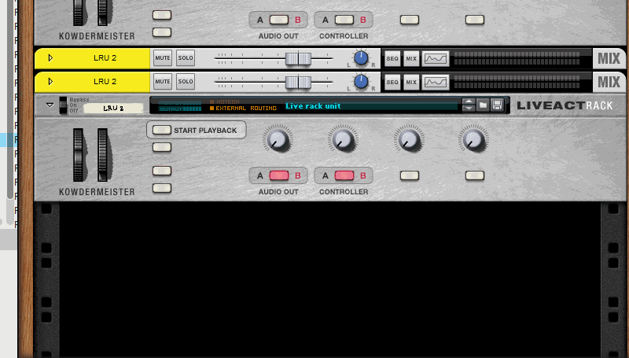
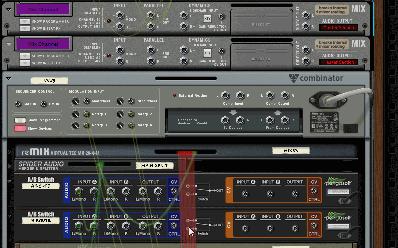

Tutorial
Here's a quick demonstration, how to add a new track to the mix.
1) Drag in the combinator and duplicate the mix channel
2) Connect the audio switches to the mix channels
Also connect the mix channels to the audio mergers.
3) Connect the CV sources to the CV switches.
This is the trickiest part. To input A always connect from LEFT. Use slots that are not used. In this case, C slot was always used, because it's the third track in the project.

Back to the main page